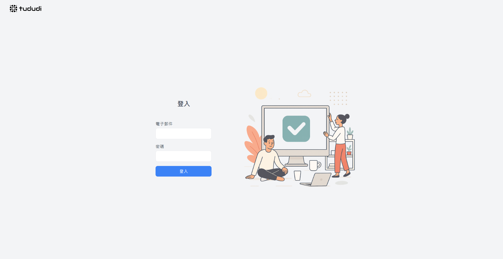
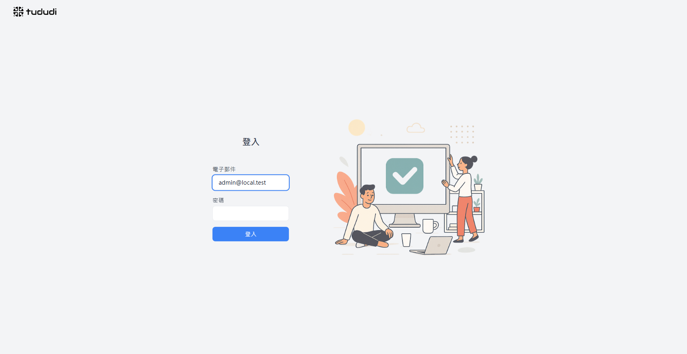
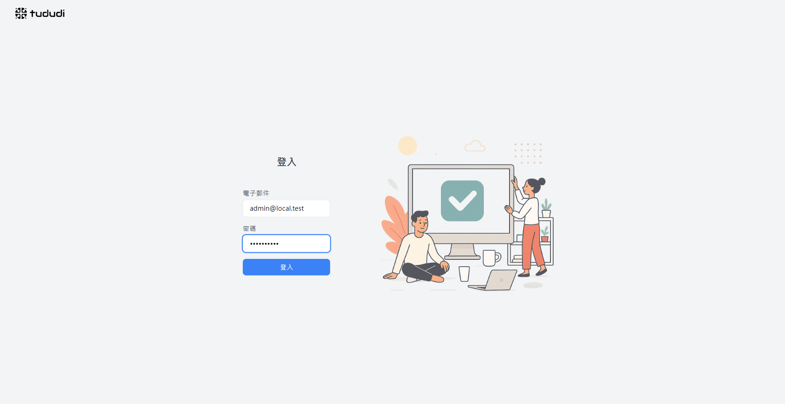
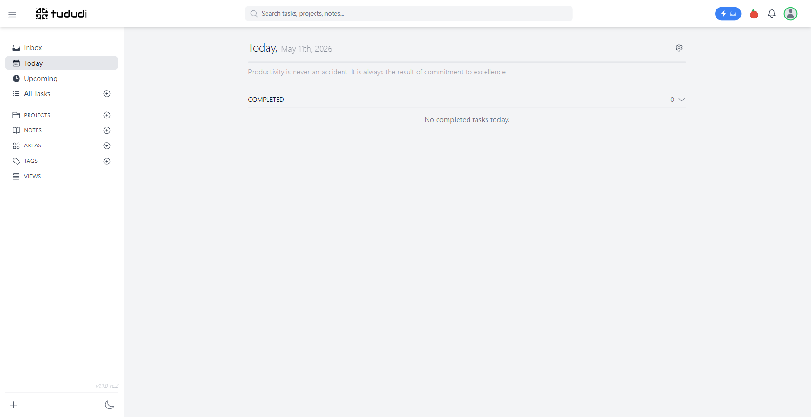
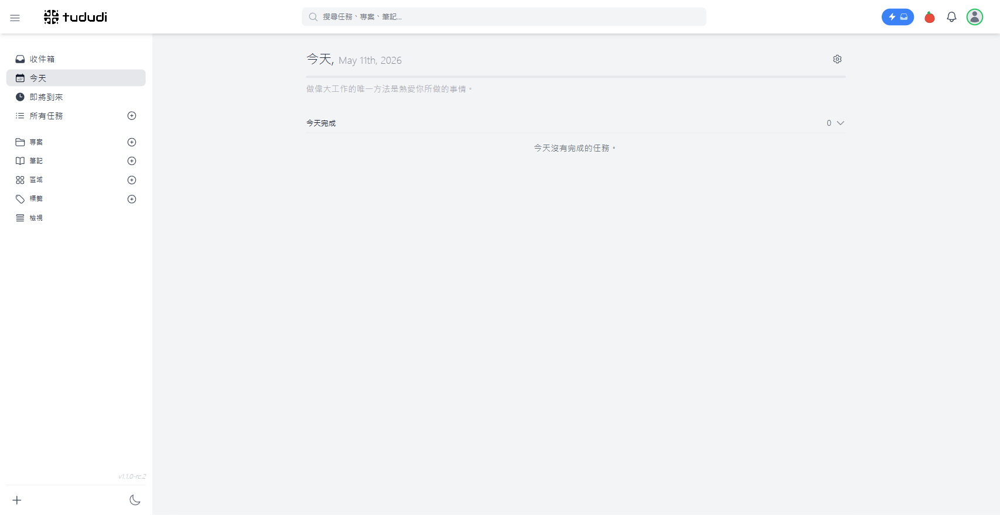

瀏覽器明明回報 zh-TW，i18next 也偵測正確、UI 一開始確實是繁體；
但只要按下「登入」鈕——標題瞬間從「今天,」變成「Today,」，
且這個切換會持久寫進 localStorage。本報告紀錄此現象的偵查過程、
透過 5 張現場截圖還原時序，並指出單一根因與最小修復路徑。
navigator.languages = ['zh-TW','zh','en-US','en'] — i18next 在首次載入時偵測正確，
localStorage.i18nextLng 被寫入 zh-TW，登入頁顯示「登入 / 電子郵件 / 密碼」。
Login.tsx:149 在收到後端回應後立刻呼叫
i18n.changeLanguage(data.user.language) —
這個動作是強制的，會蓋過任何瀏覽器偵測結果。
user-create.js 走 createOrUpdateUser 預設值，
新建使用者的 language 欄位是 en。
產品設計選擇「以 profile 為準」，但對「未設定過偏好」的新使用者，等同於強制英文。
清空 localStorage 後直接訪問 http://localhost:8080，i18next 從
navigator.languages 拿到 zh-TW、載入 locales/zh-TW/translation.json，
寫回 localStorage 與 cookie。

使用者在「電子郵件」欄位填入 admin@local.test。客戶端尚未送出任何 API 請求，
i18n 狀態未變。
i18nextLng=zh-TW 依然成立。預期之內。

密碼欄位填入 admin12345，UI 依然全程繁體。下一個動作將是觸發
POST /api/login，此後一切都不同了。

POST /api/login 回 200，body 中 user.language='en'。
Login.tsx 第 149-151 行同步呼叫 i18n.changeLanguage('en')，
localStorage 被改寫為 en、cookie 同步更新。

在 DB 將 admin@local.test 的 language 改為 zh-TW、
timezone 改為 Asia/Taipei。
清空 localStorage 後重新登入——標題顯示「今天, / 今天完成」，左側欄、版本號 v1.1.0-rc.2 一切正常。

預設值 'en'
被登入流程強制套用，蓋掉瀏覽器偵測結果。
profile 值與瀏覽器偏好對齊，i18n.changeLanguage('zh-TW')
無破壞性。
這起案件最容易誤判的地方在於：表象指向「i18n 沒跟瀏覽器」，但實際上偵測機制完全正常。
真正的觸發者是 Login.tsx
在登入回流時對 data.user.language
的強制套用——這是合理的產品決策（讓使用者語言跟 profile 走），
但對「profile 尚未設定」的新用戶來說，等同於「永遠以英文歡迎你」。
修復的最小路徑是更動 profile 值；中期最佳路徑是在
user-create.js
與註冊流程裡支援 language 參數，或讓 data.user.language
為 nullable，允許 Login.tsx 在偵測到 null 時跳過覆寫。